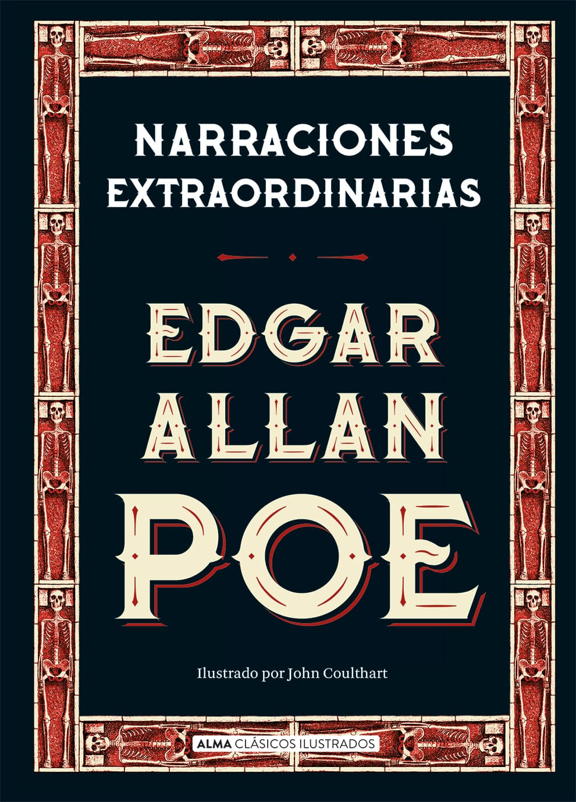
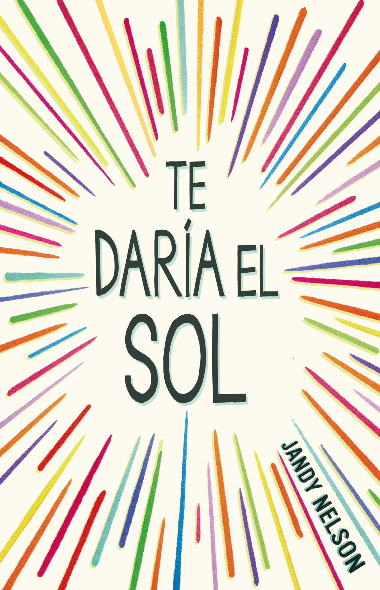
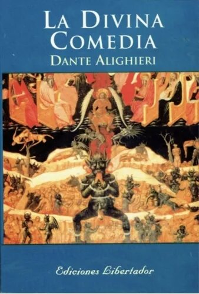
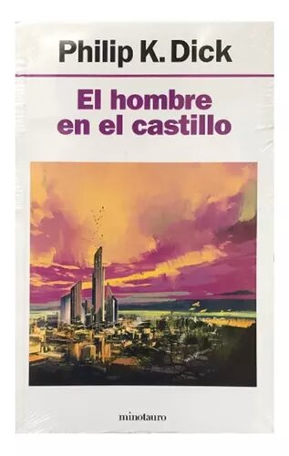
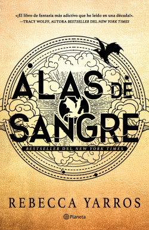
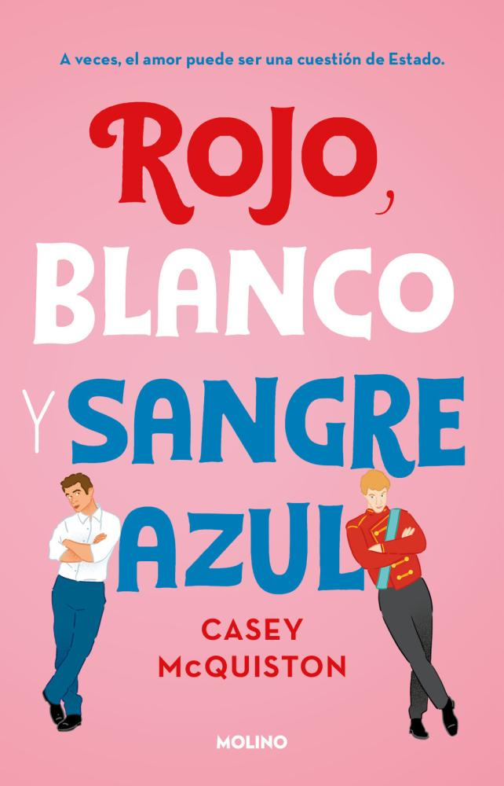
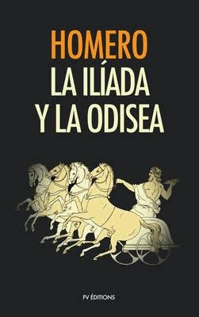
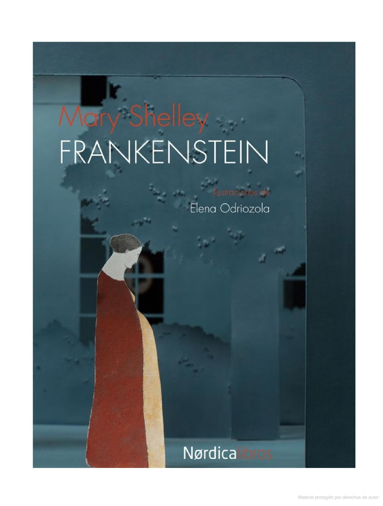
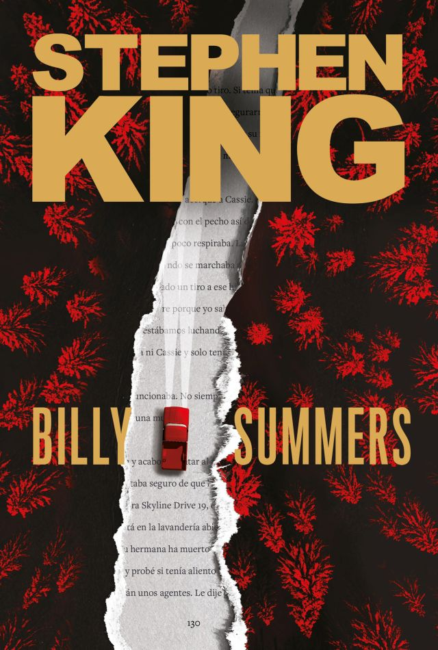
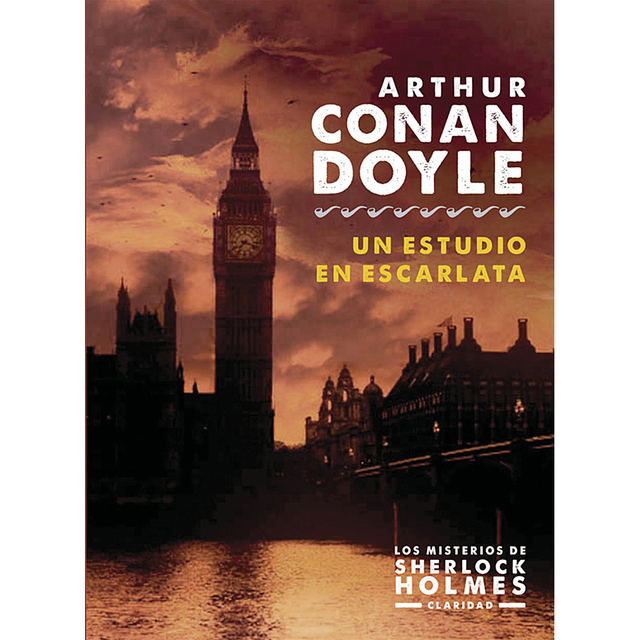

Publicaciones
|  | Narraciones Extraordinarias |
|---|---|
| Edgar Allan Poe | |
| Ficción | |
| ISBN: 9561222078, 9789561222076 | |
| Esta seleccion de cuentos muestra el maravilloso y sensacional poder de Edgar Allan Poe para transmitir al lector, a través de atmósferas opresivas e intrincados análisis, terror, intriga, angustia y sufrimiento; encumbrándose como el rey del relato breve. Aborda tematicas complejas como la muerte, la traición, la venganza, lo fantastico, lo macabro y lo sobrenatural de una manera sofisticada y extraordinaria. | |
|  | Te Daría el Sol |
|---|---|
| Jandy Nelson | |
| Ficción Adulto Joven | |
| ISBN: 6073812884, 9786073812887 | |
| Una novela muy tranquila y facil de leer. Ideal para despejarse. Una brillante historia sobre el primer amor, la familia y la traición. |
|
|  | La Divina Comedia |
|---|---|
| Dante Alighieri | |
| Poesía | |
| ISBN: 09789876620116 | |
| La Divina Comedia del florentino Dante Alighieri es un clásico de la literatura de ficción universal, que relata el viaje de Dante por el Infierno, el Purgatorio y el Paraíso, guiado por el poeta romano Virgilio. |
|
|  | El Hombre en el Castillo |
|---|---|
| Philip K. Dick | |
| Ciencia ficción, Ucronía, Ficción filosófica | |
| ISBN: 09789505471935 | |
| El hombre en el castillo es una novela ucrónica de Philip K. Dick publicada en 1962. La novela transcurre en los Estados Unidos, quince años después de que las fuerzas del Eje hayan derrotado a los aliados en la Segunda Guerra Mundial. | |
|  | Alas de Sangre |
|---|---|
| Rebecca Yarros | |
| Fantasía romántica, Alta fantasía | |
| ISBN: 9789504982982 | |
| Vuela... o muere. El nuevo fenómeno de fantasía juvenil del que todo el mundo habla. «¡La novela de fantasía más brutalmente adictiva que he leído en una década!» |
|
|  | Rojo, Blanco y Sangre Azul |
|---|---|
| Casey McQuiston | |
| Novela rosa, Ficción, Comedia romántica | |
| ISBN: 09789878120232 | |
| El VERDADERO AMOR NO SIEMPRE ES DIPLOMÁTICO. Alex Claremont-Díaz, el hijo millennial de la presidenta de Estados Unidos, es un tesoro para el marketing de la Casa Blanca: atractivo, carismático e inteligente. Lo que nadie sabe es que no soporta al príncipe Henry, el hijo de la reina de Inglaterra. | |
|  | La ilíada y la odisea |
|---|---|
| Homero | |
| Poesía | |
| ISBN: 6074530890, 9786074530896 | |
| La Ilíada trata de la cólera humana, de sus causas, sus consecuencias, y de su apaciguamiento. Todo esto tiene como ambiente de fondo el último año de la toma de Troya, también conocida como Ilión entre los griegos. La Odisea narra las aventuras, peligros y desafios que vivio el heroe griego Odiseo, durante mas de diez años, para poder regresar a itaca a reunirse con su familia, luego del triunfo en la guerra de Troya. |
|
|  | Frankenstein o el moderno Prometeo |
|---|---|
| Mary Shelley | |
| Terror | |
| ISBN: 8416440158, 9788416440153 | |
| Atrapado en los hielos del Ártico, Victor Frankenstein es rescatado por el capitán Walton. Dedicará sus últimos días a narrarle la trágica historia de sus experimentos en búsqueda del poder de dotar de vida a la materia inerte y cómo el ser que creó se rebelaría contra él. En esta edición destaca especialmente el trabajo gráfico de Elena Odriozola, quien ha hecho una personal lectura del texto clásico. | |
|  | Billy Summers |
|---|---|
| Stephen King | |
| Thriller, Ficción, Suspenso | |
| ISBN: 09789506445843 | |
| Billy Summers es un asesino a sueldo y el mejor en lo suyo; pero tiene una norma: solo acepta un encargo si su objetivo es realmente mala persona. Ahora Billy quiere dejarlo; pero todavía le queda un último golpe. Y siendo uno de los mejores francotiradores del mundo; un veterano condecorado de la guerra de Irak; un auténtico Houdini cuando toca desaparecer después de finiquitar un trabajo; ¿qué podría salirle mal? Todo. | |
|  | Estudio en Escarlata |
|---|---|
| Arthur Conan Doyle | |
| Novela, Ficción detectivesca, Misterio, Policial | |
| ISBN: 09788494083037 | |
| Un cadáver hallado en extrañas circunstancias pone en marcha los reflejos deductivos de Sherlock Holmes, mientras la policía oficial se pierde en divagaciones equivocadas o arresta a inocentes ciudadanos. Un nuevo asesinato parece complicar la historia, pero a Holmes se la aclara. | |